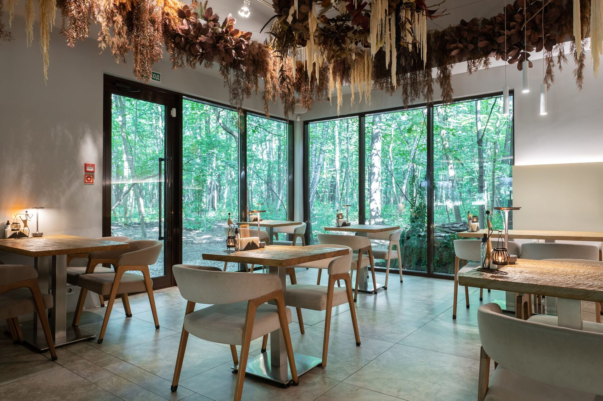
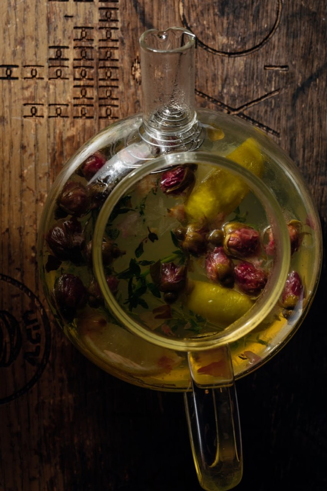
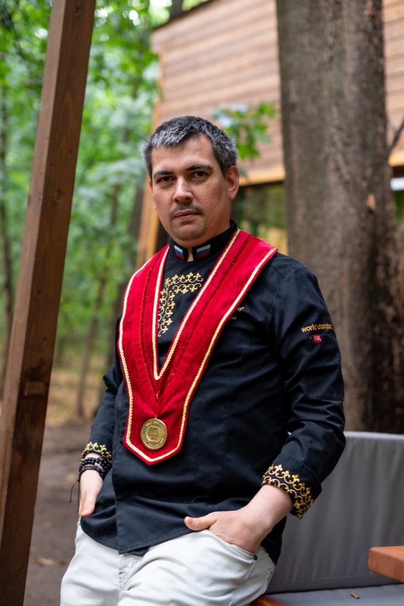

В самом сердце Филёвского парка, среди многолетних берёз, живёт ресторан, где пахнет лесом и дымком. Очаг в центре зала — не декорация. Это душа FO'X: вокруг него всё происходит, к нему приковывается взгляд с первого шага.
Бренд-шеф Бисо Чеченов — хранитель северокавказских традиций с авторским взглядом. Каждое блюдо — история рода, переосмысленная с уважением к продукту и гостю.
Панорамные окна, за которыми живёт лес. Летняя веранда, где слышно птиц. Стеклянная беседка для тех, кто хочет свой отдельный мир. Мы думаем о каждой детали — от правильного света на столе до того, как именно падает снег за окном.
Мы готовим из халяльного мяса от проверенных поставщиков — без компромиссов с продуктом и без формализма в зале.

Каждый вечер в центре зала загорается живой огонь. Не газовая горелка, не экран — настоящие дрова, настоящее тепло, настоящий запах костра в лесу. Вокруг очага собираются гости, ведутся разговоры, рождаются вечера, которые хочется повторить.
Это та самая деталь, ради которой возвращаются. Огонь, у которого хочется сидеть до полуночи.
Забронировать стол у очага
За каждым блюдом FO'X стоит Бисо Чеченов — бренд-шеф, для которого кавказская кухня не профессия, а родословная. Он вырос на запахе дровяного очага и горских специй и сегодня переносит эту память прямо в тарелку гостя.
Чемпион проекта «Аутентичная кухня Кавказа», он оттачивал мастерство на кухнях Милана и Ниццы — но всегда возвращался к одному: настоящему вкусу, честному продукту и теплу, с которым на Кавказе встречают дорогого гостя.
«Кавказская кухня — это не рецепт. Это память. Мы готовим так, чтобы каждый гость почувствовал себя в настоящем горском доме.»Бисо Чеченов · бренд-шеф FO'X
Лучше один раз увидеть. У открытого огня Бисо работает без суеты — выверенные, отточенные годами движения, в которых читается вся школа кавказской кухни. Здесь нет случайностей: каждый розжиг, каждая подача — это маленький спектакль для гостя.
Фирменная «Форель в коконе», рыба в солевом панцире, мангал на живых углях — Бисо готовит так, как готовили в горских домах, но с подачей ресторана высокой кухни. Огонь у него не приём ради эффекта, а способ раскрыть честный вкус продукта.
Это и есть мастерство, ради которого к нам возвращаются: тепло Кавказа, уверенная рука шефа и блюда, которые помнишь ещё долго после ужина.
«Огонь не прощает спешки. Он либо раскрывает продукт, либо губит его. Я просто научился его слушать.»Бисо Чеченов